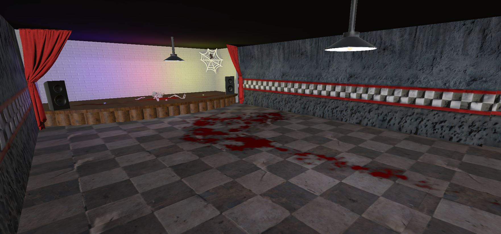
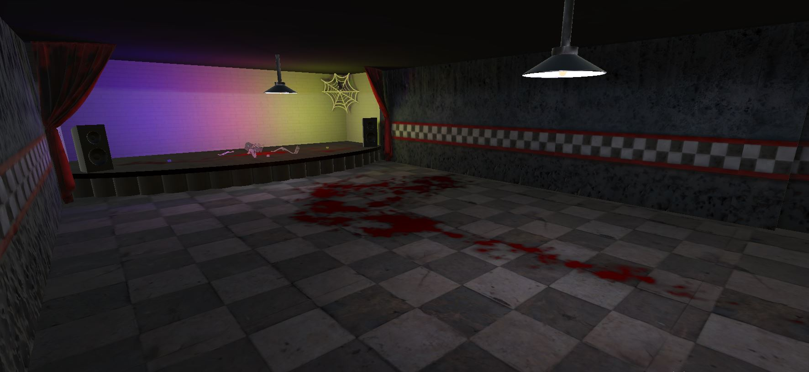
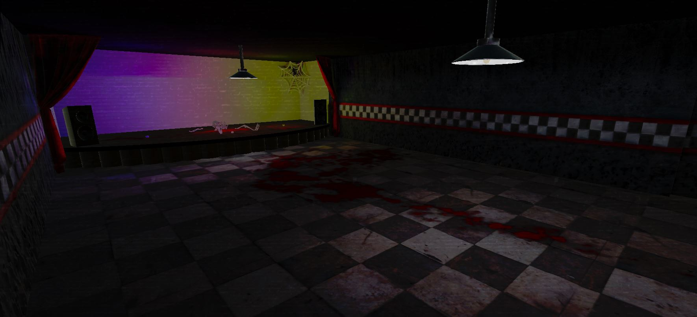

Кто это?
Game дизайнер - это важнейшая профессия в игровой индустрии. На Game дизайнерах лежат основы игр, такие как: проработаность игровых локаций, баланс в игре, пользовательский интерфейс и самое главное - атмосфера игры.
Game дизайнера можно по праву называть создателем миров, правда игровых..
Начало пути
В дестве, играя в игры, я не понимал, почему никто не может сделать крутую игру с картой всего мира и отличной графикой? Взрослее я стал понимать всё проблемы этой задумки и мне в голову стали приходить идеи игр, которые я мог бы сделать. Мечтал так несколько лет, пока не понял. Пора работать! В период создания игры мне пришлось опробовать на себе огромное количество профессий в gameDev. Больше всего мне понравилась профессия Game дизайнера.
Изучать работу данных специалистов я начал еще давно, проходя разнообразные игры.
Проба на практике
Доработка локации
Когда механики моей хоррор игры были готовы, я начал работать над проработаностью локаций. Расскидал по локации множество моделей: паутина, гробы, скелеты, лужи крови. Все это помогло бы игроку погрузиться в атмосферу игры.
Часть локации с новыми моделями
Запекание освещения
Локация была уже далеко не такой пустой, как раньше. Но мне очень не нравилось освещение. Все было каким-то слишком светлым, а для хоррор игры это совершенно не подходит. Тогда я решил, что нужно запечь освещение. При этом тени перестают отрисовываться каждый кадр. И можно добиться улучшения качества освещения в несколько раз. Спустя множество проб и ошибок я смог настроить освещение, подходящее моей игре.
Локация с запеченным освещением
Постобработка
На этом этапе графика меня уже устраивала, но при экспорте игры на свой ПК и я увидел, что количество кадров в секунуду у меня доходит до 3000. Поэтому я решил еще нагрузить игру постобработкой. Постобработка, простым языком - это добавление фильтров на уже имеющийся кадр. Такие же фильтры используются при обработке фотографий. С помощью постобработки я сделал тени еще темнее. Так же для большей напряжености игрока я добавил fx эффекты для камеры. Из-за этого у меня получилось что-то на подобии шума.
Локация с освещением и постобработкой
Баланс вселенной
Когда игра была уже почти готова, настала пора настраивать ее баланс. Я добавил регулировку сложностей игры и возможность возрадиться. А так же настроил соотношение урона и получаемого дамага, скорость передвижения игрока и ботов, а так же многое другое.
Конец разработки
Конечно же это далеко не все, с чем сталкивается Game дизайнера. Как оказалось, Game дизайнер должен быть креативным и очень терпеливым, так как даже у профессионального game дизайнера вся работа делается методом проб и ошибок.
В этом проекте я совместил множество профессиий, такие как: Game дизайнер, программист игровых механик, программист AI, художник UI и другие.
От начала разработки игры и до ее релиза в Яндекс игры прошел 81 день. Я работал со своей командой, а именно c 3D-художником и музыкальным композитором. И я не жалею, что потратил на этот проект много времени и сил...
Если вас заинтересовал наш проект, то можете поиграть в него, нажав на этот текст.P.S: В конце разработки мне пришлось убрать постобработку на мобильных устройствах для улучшения производительности. Но на ПК все осталось так же.